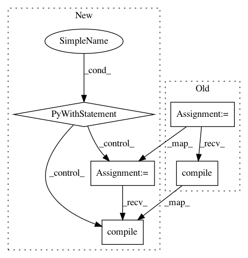

98db3c307d617661e33f0f14595f3347fe2fb4ed,testing/test_methods.py,TestSVGP,test_q_sqrt_fixing,#TestSVGP#,150
Before Change
In response to bug /ኊ, we need to make sure that the q_sqrt matrix can be fixed
m1 = gpflow.models.SVGP(self.X, self.Y,
kern=gpflow.kernels.RBF(1) + gpflow.kernels.White(1),
likelihood=gpflow.likelihoods.Exponential(),
Z=self.Z)
m1.q_sqrt.fixed = True
m1.compile()
class TestStochasticGradients(GPflowTestCase):
In response to bug /뢱, we need to make sure stochastic update
After Change
In response to bug /ኊ, we need to make sure that the q_sqrt matrix can be fixed
with self.test_context():
m1 = gpflow.models.SVGP(
self.X, self.Y,
kern=gpflow.kernels.RBF(1) + gpflow.kernels.White(1),
likelihood=gpflow.likelihoods.Exponential(),
Z=self.Z)
m1.q_sqrt.trainable = False
m1.compile()
class TestStochasticGradients(GPflowTestCase):
In response to bug /뢱, we need to make sure stochastic update
happens correctly in tf optimizer mode.
In pattern: SUPERPATTERN
Frequency: 4
Non-data size: 5
Instances
Project Name: GPflow/GPflow
Commit Name: 98db3c307d617661e33f0f14595f3347fe2fb4ed
Time: 2017-10-31
Author: art.art.v@gmail.com
File Name: testing/test_methods.py
Class Name: TestSVGP
Method Name: test_q_sqrt_fixing
Project Name: keras-team/keras
Commit Name: 8d77bc5f267a49ed890222039f9ee058cca7f22f
Time: 2021-03-01
Author: scottzhu@google.com
File Name: keras/saving/save_test.py
Class Name: TestWholeModelSaving
Method Name: test_multi_output_metrics_name_stay_same
Project Name: keras-team/keras
Commit Name: 0b89570b1601f25ebb959638aa7254b9394f7694
Time: 2021-02-26
Author: scottzhu@google.com
File Name: keras/saving/saved_model/saved_model_test.py
Class Name: MetricTest
Method Name: test_custom_metric_model
Project Name: keras-team/keras
Commit Name: 60c52ea766b8049c4396ad76c6f4242039c5e974
Time: 2017-05-26
Author: anis.khlif01@gmail.com
File Name: keras/models.py
Class Name:
Method Name: load_model